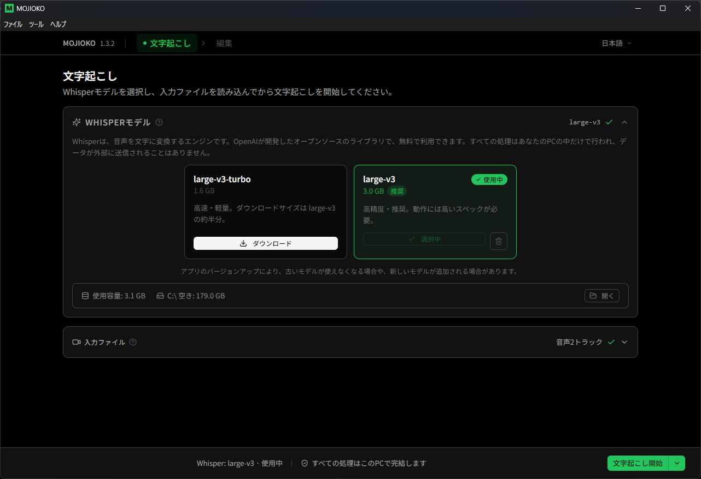
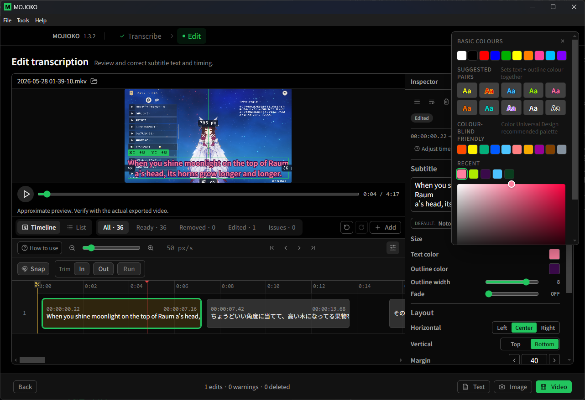
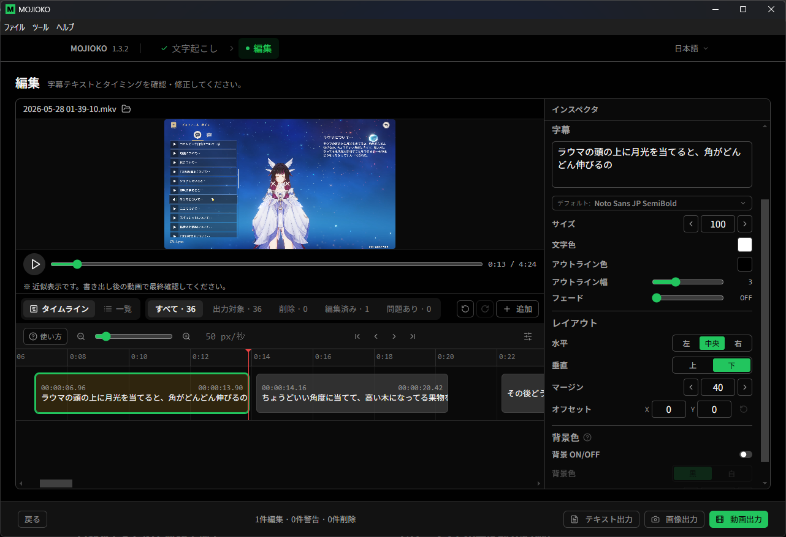
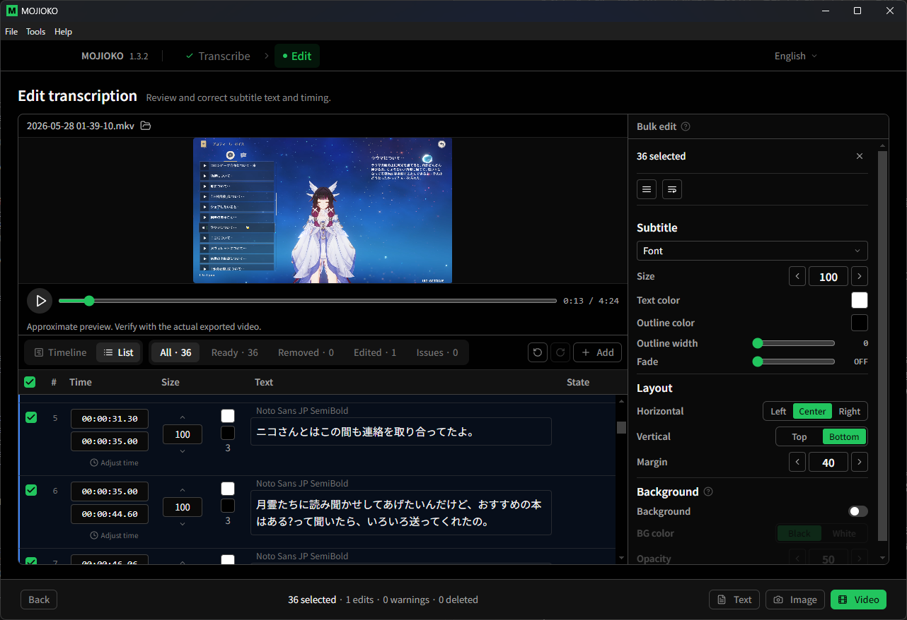
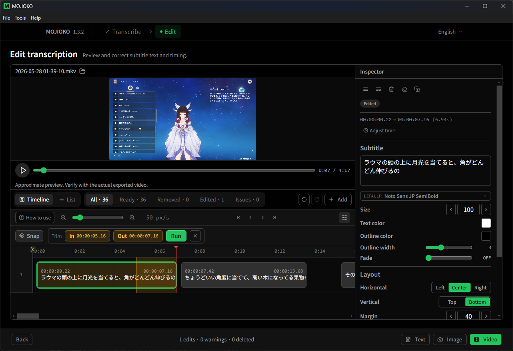
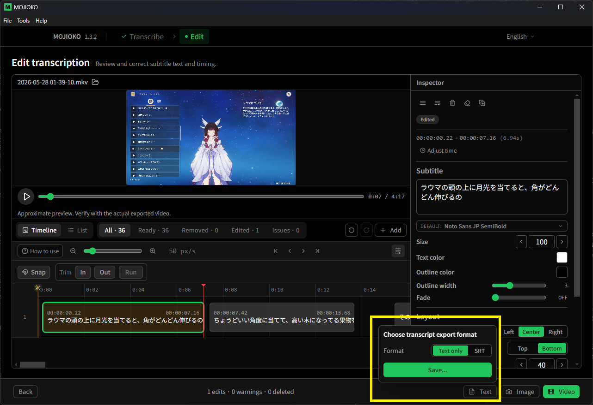
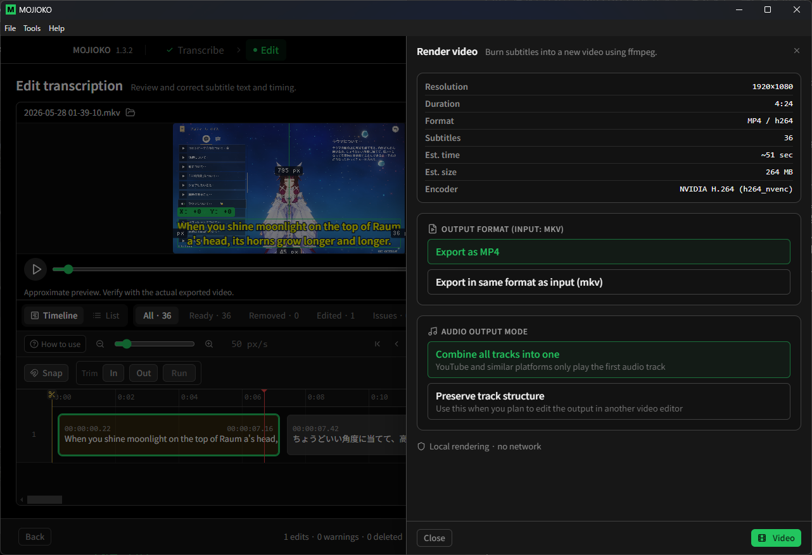

MOJIOKO
Transcribe and create subtitled videos
Free
- All core features are free: transcription, editing, subtitle text export, and subtitle video export.
- Includes one default font (Noto Sans JP).
Paid
- Access to all features, including paid-only features added in future updates.
- Use 8 additional fonts prepared by MOJIOKO, with more possibly added in future updates.
- Available on the Microsoft Store, with automatic updates to always stay on the latest version.
What you can do with MOJIOKO

High-accuracy automatic transcription
Automatically transcribe speech from video or audio using Whisper, a high-accuracy speech-recognition AI developed by OpenAI. Even long videos are transcribed into text in one go.
Works with both video and audio files. For videos with multiple audio tracks, you can pick which track to transcribe.
💡 Multiple audio tracks?Videos where different sounds — like game audio and mic voice — are recorded separately. MOJIOKO lets you transcribe just the voice.
Flexible subtitle editing

Edit text and appearance freely
Fix the transcribed text, and adjust the font (paid version only), size, color, and outline color/thickness.

Adjust timing on the timeline
Drag to change how long each subtitle stays on screen.

Review and edit in a list view
See all subtitles at once and edit them in bulk.

Trim out unwanted parts
Cut unneeded sections on the timeline.
💡 Timeline?A horizontal bar showing the flow of time in your video, so you can edit when each subtitle appears.

Export as text or SRT
Export the transcription as a plain text file or in SRT format.
With SRT, import subtitles — complete with start/end times — into video editors like DaVinci Resolve.
You can also load the exported text into speech tools like VOICEVOX to generate voices.
💡 SRT?The standard subtitle file format, pairing each line of text with its on-screen timing. Supported by most video editors and platforms.

Burn in subtitles and export video
Burn your edited subtitles directly into the video.
Merge multiple audio tracks into one, ready to upload to YouTube and more.
💡 Burn-in?Embedding subtitles into the video itself, so they always show on any player.

Subtitle vertical videos with ease
Supports vertical videos (9:16). Import MKV and MP4 files, then export as MP4 for direct uploading to TikTok, YouTube Shorts, and Instagram Reels.
Planned Features
The following features are under consideration
- Timeline editor
- Text and outline opacity settings
* Timing TBD. May be changed or canceled.
Support this Project
MOJIOKO is free to use. If you find it helpful, please consider supporting its development.
Buy Me a Coffee
Global / No account needed / From $3
BOOTH (Japan only)
PayPay / Convenience store / Credit card / From ¥300
GitHub Sponsors
One-time or recurring / GitHub account required
Get Started
All processing runs locally on your PC. Your video data is never uploaded anywhere.
Download User Guide FAQ, OBS Setup, and More Feedback Bug reports & feature requests Get it on Microsoft Store